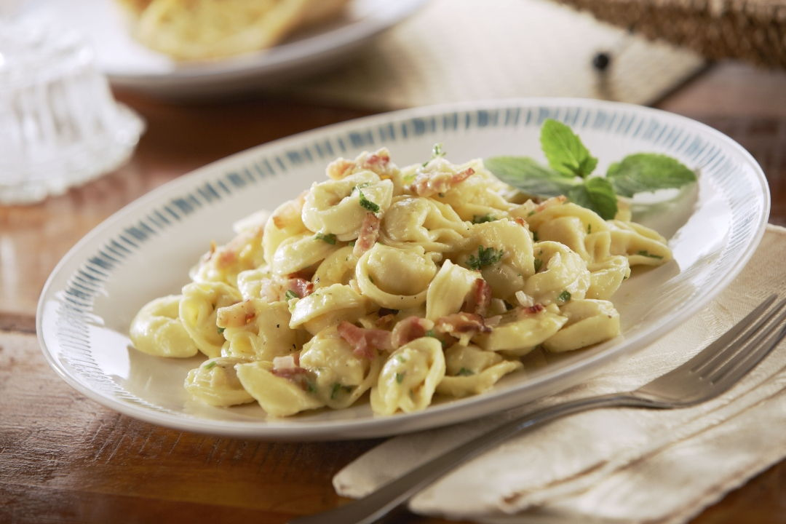

Tortellini Carbonara

Description
Bacon, cream and Parmesan cheese make a classic pasta sauce that's absolutely heavenly. It's a delightful option for company!
Ingredients
- 1 package (9 ounces) refrigerated cheese tortellini
- 8 bacon strips, chopped
- 1 cup heavy whipping cream
- 1/2 cup grated Parmesan cheese
- 1/2 cup chopped fresh parsley
Steps
- Cook tortellini according to package directions; drain.
- Meanwhile, in a large skillet, cook bacon over medium heat until crisp, stirring occasionally. Remove with a slotted spoon; drain on paper towels. Pour off drippings.
- In same pan, combine cream, cheese, parsley and bacon; heat through over medium heat. Stir in tortellini. Serve immediately.
Back to main page